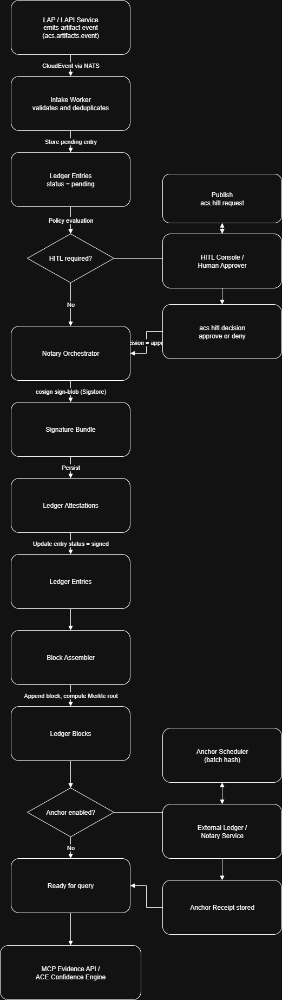

---
title: "ACE::Ledger — Verifiable Attestation for Agentic Systems"
subtitle: "SyzygySys White Paper (Draft)"
author: "SyzygySys Ltd"
date: 2025-10-09
version: 0.1.0
layout: whitepaper
---

## Abstract
**ACE::Ledger** is the attestation backbone of the ACE platform. It ingests artifact evidence from distributed services and agents, enforces de‑duplication, persists provenance and integrity records, and publishes anchor material for verifiers across ACE. It is optimized for least‑privilege operation, cryptographic anchors, and first‑class observability.
> Audience: Platform engineers, security & compliance teams, and researchers who need verifiable audit trails for agentic systems.
---
## 1. Executive Summary
- Purpose: Establish a source of truth for artifacts and actions produced by human + agent workflows.
- Design goals: integrity, traceability, minimal privilege, operational simplicity, and rich metrics.
- Outcomes: verifiable history across ACE services; portable anchors suitable for external auditors.
---
## 2. Problem & Context
AI-enabled systems generate an explosion of intermediate artifacts (plans, prompts, code, datasets, model I/O). Without an explicit ledger, teams cannot prove what happened, by whom, with which inputs, under which policies. Compliance requirements (GDPR / AI‑Act / ISO 42001) demand durable, queryable, and tamper‑evident attestations.
ACE::Ledger addresses this gap with a compact intake worker, a hardened Postgres schema, and well‑defined envelopes for artifacts and attestations.
---
## 3. System Overview
**Core responsibilities**
1. Intake of artifact/attestation envelopes via NATS subjects.
2. Normalization to canonical schemas; enforcement of de‑duplication keys.
3. Persistence to the `ledger` schema with immutable append semantics.
4. Anchoring — publication of references/roots for downstream verifiers.
5. Observability — Prometheus metrics, dashboards, and DLQ visibility.
**Primary interfaces**
- NATS (JetStream) subjects for producer → intake, ack, and DLQ paths.
- PostgreSQL for durable storage and indexable queries.
- FastAPI read‑only endpoints for dashboards and tooling (internal).
---
## 4. Architecture
```
Producers (ACE services, agents) ──┐
│ ace.ledger.artifact.event
▼
┌───────────────────────┐
│ Intake Worker │
│ • schema validate │
│ • dedupe guard │
│ • persist + metrics │
└──────────┬────────────┘
│ ack / dlq
▼
┌───────────────────────┐
│ Ledger (Postgres) │
│ • entries │
│ • attestations │
│ • blocks / anchors │
└──────────┬────────────┘
▼
Dashboards / Verifiers
```
---
## 5. Data Model
**Schema (schema name: `ledger`)**
- ledger_entries — canonical artifact envelope rows (producer id, content hash, timestamps, subjects).
- ledger_attestations — statements linking artifacts to policies/executions/verifiers.
- ledger_blocks — optional grouping for windowed anchoring.
- ledger_anchors — published roots (e.g., Merkle roots) and external anchor ids.
- ledger_intake_dedupe — guard table preventing replay and ensuring idempotence.
**Envelope contracts**
- ace.artifact.v1 — artifact envelope (CloudEvents compatible).
- ace.attestation.v1 — attestation envelope.
---
## 6. Intake & Acknowledgement Flow
1. Publish: producers send CloudEvents‑style envelopes to `ace.ledger.artifact.event`.
2. Validate: intake validates against JSON schemas; compute dedupe key (e.g., SHA256 of normalized body + producer id).
3. Persist: write to ledger_entries; link or insert ledger_attestations.
4. Ack / DLQ: success → `ace.ledger.artifact.ack`; failure → `ace.ledger.artifact.dlq` with reason.
5. Metrics: update counters, in‑flight gauges, and latency histograms; dashboards consume `/metrics`.
---
## 7. Security & Least‑Privilege
- Dedicated DB roles: ace_ledger_intake, ace_ledger_reader, ace_ledger_admin.
- Explicit CONNECT/USAGE and table‑level grants; intake cannot mutate anything outside its remit.
- Optional row‑level security for multi‑tenant deployments.
- All services run with principle of least privilege and are network‑isolated per ACE conventions.
---
## 8. Observability
- Metrics namespace: ace_ledger_* (e.g., ace_ledger_intake_events_total, ace_ledger_intake_dlq_total).
- Dashboards: Grafana panels for throughput, acks, DLQ rate, and dedupe guard occupancy.
- Endpoints: /metrics (Prometheus). Internal /api/dashboard aggregates for UI.
---
## 9. Integration in ACE
- Producers: ACE::Registry, ACE::Crown, internal agent teams, external LLM tooling.
- Verifiers: compliance checkers, auditors, and report generators.
- Messaging: NATS accounts and ACLs for producer vs intake vs observer.
---
## 10. Operations
- Config via environment (HOST/DB/NATS vars) with sane dev defaults.
- Run: containerized services; compose targets map to ACE network conventions.
- Migrations: Alembic scripts within the ledger schema; CI runs smoke + SDF.
---
## 11. Roadmap
- Anchoring to external timestamping services.
- Verifier SDKs (Python/Go) with policy templates.
- Binary transparency for model/runtime artifacts.
- Extended DLQ analysis and auto‑remediation hooks.
---
## 12. Licensing
- Open‑core: community edition for research, EDU, and home labs.
- Commercial: enterprise features (federated policy, external anchoring packs, advanced dashboards). Dual‑license and runtime license key enforcement.
---
## Appendix A — JSON Schemas (excerpt)
(Inline excerpts or link to repository paths once published.)
## Appendix B — Metrics Reference
- ace_ledger_intake_events_total
- ace_ledger_intake_inflight_gauge
- ace_ledger_intake_latency_seconds_bucket
- ace_ledger_intake_dlq_total
## Appendix C — Deployment Profiles
- Dev: single‑node Postgres + NATS, local dashboards.
- Staging: HA NATS, managed Postgres, dedicated Grafana.
- Prod: RLS enabled, secrets management, disaster recovery plan.
ACE::Ledger — Verifiable Attestation for Agentic Systems
